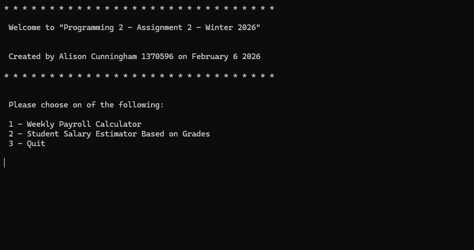

This C# console application is a menu-driven program containing two main features: a Weekly Payroll Calculator and a Student Salary Estimator Based on Grades.

The payroll section calculates employee pay based on hours worked and hourly wage.
This project helped me improve my understanding of functional decomposition and writing organized, modular code in C#. I gained more experience working with arrays, loops, input validation, and methods while building a more robust console application. I also learned how to process calculations and format data clearly for the user.